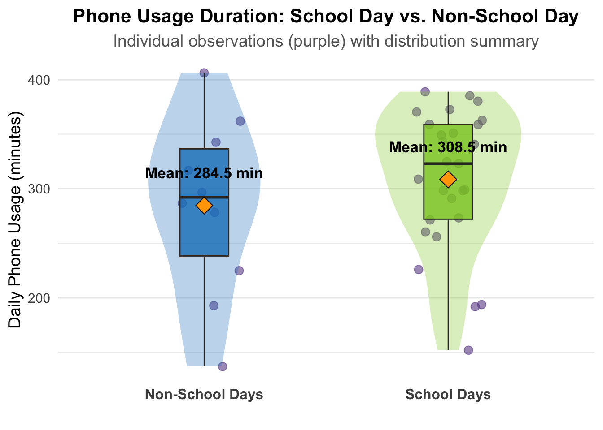

#Load in packages
library(tidyverse)
library(readxl)
library(here)
library(janitor)
library(flextable)
library(lubridate)
library(ggplot2)
library(ggpubr)
library(dplyr)
#Read in data for Problem 1 (Personal data)
phone_data <- read_csv(here("data", "phone_data.csv"))ENVS 193DS - Homework 3
Github Repository
https://github.com/ScottWag/ENVS-193DS_homework-03
Setup
Problem 1. Personal Data
a. Data Summarizing
I could calculate the mean daily phone usage (response variable, continuous, minutes) and compare it between school days vs. non-school days (predictor variable, groups, yes/no). This comparison is informative because on school days I utilize my phone for educational material in addition to personal use, so I think I will have a greater mean daily usage on school days.
b. Visualization
# Clean the data
phone_data_clean <- phone_data %>%
# Convert Duration to minutes
mutate(
# First fix the inconsistent formatting (HH:MM vs HH:MM:SS.000)
Duration = str_replace(Duration, ":00\\.000$", ""), # Remove seconds/milliseconds
Duration = ifelse(str_count(Duration, ":") == 1,
paste0("00:", Duration), # Add hours if missing
Duration),
# Convert to duration format then to total minutes
Duration = as.numeric(hms(Duration))/60
) %>%
# Select only the columns we want
select(Duration, School_day) %>%
# Convert School_day to logical (TRUE/FALSE)
mutate(School_day = School_day == "Yes")
# Calculate summary statistics
summary_stats <- phone_data_clean %>%
group_by(School_day) %>%
summarise(
mean = mean(Duration),
median = median(Duration),
n = n(),
se = sd(Duration)/sqrt(n())
)
# Create visualization
ggplot(phone_data_clean, aes(x = School_day, y = Duration, fill = School_day)) +
# Add raw data points
geom_jitter(width = 0.15, size = 3, alpha = 0.6, color = "#6A4C93") +
# Add violin plot to show distribution shape
geom_violin(width = 0.6, alpha = 0.3, color = NA) +
# Add boxplot for quartiles
geom_boxplot(width = 0.2, alpha = 0.8, outlier.shape = NA) +
# Add mean points
geom_point(data = summary_stats,
aes(y = mean),
shape = 23, size = 5,
fill = "#FFA500", color = "black") +
# Add mean labels
geom_text(data = summary_stats,
aes(y = mean,
label = paste0("Mean: ", round(mean, 1), " min")),
vjust = -2.5, size = 4.5, fontface = "bold") +
# Custom colors and labels
scale_fill_manual(values = c("#1982C4", "#8AC926"),
labels = c("Non-School Days", "School Days")) +
scale_x_discrete(labels = c("Non-School Days", "School Days")) +
# Titles and labels
labs(
title = "Phone Usage Duration: School Day vs. Non-School Day",
subtitle = "Individual observations (purple) with distribution summary",
x = "",
y = "Daily Phone Usage (minutes)",
round(t.test(Duration ~ School_day, data = phone_data_clean)$p.value, 3)) +
# Theme adjustments
theme_minimal(base_size = 14) +
theme(
legend.position = "none",
plot.title = element_text(face = "bold", hjust = 0.5, size = 16),
plot.subtitle = element_text(hjust = 0.5, color = "gray40"),
axis.text.x = element_text(size = 12, face = "bold"),
panel.grid.major.x = element_blank(),
plot.caption = element_text(hjust = 0, margin = margin(t = 10))
) 
c. Caption
Figure 1. Daily phone usage duration comparison between school days (green) and non-school days (blue) shows individual observations (purple circles), distribution densities (violin plots), quartiles (boxplots), and mean values (orange diamonds).
d. Table presentation
# Calculate summary statistics from cleaned phone data
summary_table <- phone_data_clean %>%
group_by(School_day) %>% # Group data by school day status (TRUE/FALSE)
# Calculate summary statistics for each group
summarise(
Mean = round(mean(Duration), 1), # Average duration rounded to 1 decimal
SD = round(sd(Duration), 1), # Standard deviation
Median = round(median(Duration), 1), # Median value
Q1 = round(quantile(Duration, 0.25), 1), # First quartile (25th percentile)
Q3 = round(quantile(Duration, 0.75), 1), # Third quartile (75th percentile)
N = n() # Count of observations in each group
) %>%
# Convert logical School_day to descriptive labels
mutate(School_day = ifelse(School_day, "School Day", "Non-School Day"))
# Create the flextable object
ft <- flextable(summary_table) %>%
# Set clear column headers
set_header_labels(
School_day = "Day Type",
Mean = "Mean (min)",
SD = "SD (min)",
Median = "Median (min)",
Q1 = "Q1 (min)",
Q3 = "Q3 (min)",
N = "Days"
) %>%
# Add a multi-level header to group related statistics
add_header_row(
values = c("", "Central Tendency", "Variability", "Quartiles", ""),
colwidths = c(1, 2, 1, 2, 1) # Column spans for header groups
) %>%
# Apply visual styling
theme_box() %>% # Basic box theme
bg(part = "header", bg = "#2C3E50") %>% # Dark header background
color(part = "header", color = "white") %>% # White header text
bold(part = "header") %>% # Bold header text
align(align = "center", part = "all") %>% # Center-align all cells
width(width = 0.8) # Set column width
# Display the formatted table
ftCentral Tendency | Variability | Quartiles | ||||
|---|---|---|---|---|---|---|
Day Type | Mean (min) | SD (min) | Median (min) | Q1 (min) | Q3 (min) | Days |
Non-School Day | 284.5 | 81.0 | 292 | 238.2 | 336.5 | 10 |
School Day | 308.5 | 63.9 | 323 | 272.0 | 359.0 | 27 |
Problem 2. Affective visualization
a. Describe in words what an affective visualization could look like for your personal data
[]
b. Create a sketch (on paper) of your idea
[]
c. Make a draft of your visualization
[]
d. Write an artist statement
[]
Problem 3. Statistical critique
a. Revisit and summarize
The authors use several statistical tests to analyze the relationship between Halimeda cover and thermal stress (degree heating weeks) while accounting for habitat differences. First, they apply linear mixed-effects models to evaluate the fixed effects of thermal stress and habitat while incorporating random site effects. Second, Pearson’s correlation tests assess linear relationships between Halimeda cover and thermal stress across reef zones. Third, pairwise comparisons (paired t-tests) examine site-specific temporal changes in cover. Finally, supplementary analyses (ANOVA) further validate habitat-related differences independent of thermal stress.
b. Visual clarity
[]
c. Aesthetic clarity
[]
d. Recommendations
[]